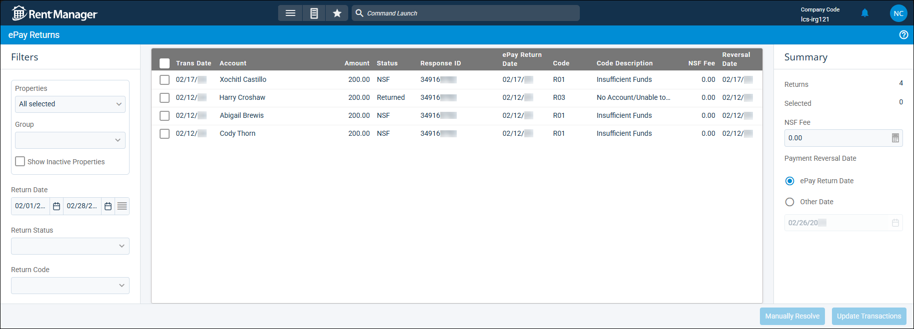

Source: https://rmxhelp.rentmanager.com/Topics/Express/KB/ePay-Check-Returns.htm
Reverse a Returned ePay Payment
Using ePay allows you to process electronic payments in Rent Manager. When payments made via ePay cannot be processed due to reasons such as insufficient funds or being voided, those payments display in the ePay Returns page. This page allows you to record these returned payments in bulk and simultaneously clear them from the page. There are two ways to document reversals for returned ePay payments in Rent Manager: establish settings on this page to apply to the reversal, or manually complete the reversal on a tenant's account.
There are two ways to document reversals for returned ePay payments in Rent Manager. The recommended way is to update the transactions using the ePay Returns page as described below. Alternatively, if you have already manually reversed the transaction in Rent Manager, you must then manually resolve the returned ePay payment from this page.
Related Privileges
| Group | Privilege | Column |
|---|---|---|
| ePay | Perform ePay Returns | Enabled |
For more information, refer to Control User Access.
To document a returned ePay payment reversal, go to  arrow_forward Accounting arrow_forward ePay arrow_forward Check ePay Returns.
arrow_forward Accounting arrow_forward ePay arrow_forward Check ePay Returns.

Step 1: Select ePay Returns
Before you can process ePay return reversals in Rent Manager, you need to filter the transactions that are included in the list.
To filter the list for documenting ePay payment reversalIn the Filters section, do the following:
-
Go to
 arrow_forward Accounting arrow_forward ePay arrow_forward Check ePay Returns.
arrow_forward Accounting arrow_forward ePay arrow_forward Check ePay Returns. -
In the Filters section's Properties field, select the properties whose ePay returns need to be reversed. Alternatively, select a property Group from the drop-down list.
More Information
This field populates only with the properties to which you have access. Your access to properties can be managed from your user account or on the property's details page. For more information, refer to Limit Access to a Property.
-
In the Return Date field, enter the From and/or To dates to display only ePay returns with a transaction date during the specified period.
-
In the Return Status field, select the cause of ePay returns to display:
Option Description NSF
The ePay payment could not be processed due to non-sufficient funds.
Returned
The ePay payment could not be processed for other reasons, such as an incorrect bank account or card number.
-
In the Return Code field, select the specific reason(s) that the ePay payment could not be processed to display (e.g., RO1: Insufficient Funds, RO2: Account Closed). To include all returned ePay payments, leave this field blank.
More Information
Return codes are provided by Zego, and only codes associated with returned payments in the system display in the drop-down list. For a complete list of return codes, refer to ACH/E-Check Return Codes on Zego's website.
Step 2: Reverse ePay Payments
Once the list of ePay returns displays as needed, process the reversals by doing the following:
-
Select each returned payment that needs to be reversed from the list.
-
In the Summary section, enter information in the following fields:
Field Description NSF Fee
Related Privileges
Group Privilege Column Receivables Allow to NSF/Void a payment Enabled For more information, refer to Control User Access.
The amount to charge as an NSF fee for the payment reversal.
Payment Reversal Date
The date to record the reversal in Rent Manager. By default, ePay Return Date is selected, which uses the date that Zego actually returned the payment. Alternatively, select Other Date and enter another date.
-
Click Update Transactions.
The selected payments reversals are documented in Rent Manager using the options set in the Summary section. The reversal is recorded on the tenants' transactions and in your bank register(s) in Rent Manager.More Information
If you have already manually reversed the transaction directly from the tenant account's transactions, click Manually Resolve instead. This indicates that the reversal is already recorded and clears it from the list without recording a duplicate reversal.
If you click Manually Resolve but have not yet manually reversed the tenant's transaction, the returned payment is still cleared from the ePay Returns page, but you must still reverse the transaction manually on the tenant's account. For more information, refer to Reverse a Payment for Non-Sufficient Funds (NSF) and Void a Payment.